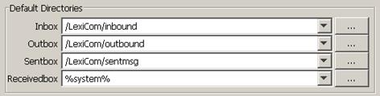
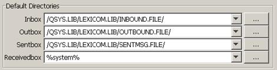
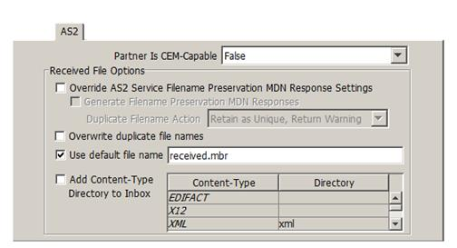

| AS/400 Configure and Test / Configuring for AS/400 Native or Integrated File System Access | |
Note: You should follow the instructions in this section only if you have an application or translator (such as TrustedLink) that requires you to write files into the AS/400 Native File System.
Before you can successfully read and write AS/400 native files, they must be created using the following AS/400 CL commands. In this example, we have created a LEXICOM library where the INBOUND, OUTBOUND and the optional SENTMSG files will reside:
CRTPF FILE(LEXICOM/INBOUND) RCDLEN(132) MAXMBRS(*NOMAX ) SIZE(*NOMAX)
CRTPF FILE(LEXICOM/OUTBOUND) RCDLEN(132) MAXMBRS(*NOMAX) SIZE(*NOMAX)
CRTPF FILE(LEXICOM/SENTMSG) RCDLEN(132) MAXMBRS(*NOMAX) SIZE(*NOMAX)
Special Note: If you are receiving fixed length documents from your trading partner and are writing to the Native File System (NFS) using the "append" option (FTP and FTP/s users only), the file you will be writing must have the same record length as the document being received and each line of the document must have the same fixed length. (The example above uses a record length of 132 characters however, in your environment this value may be different.)
The next step is to link the INBOUND and OUTBOUND (and optionally the SENTBOX) files with the "Inbox", "Outbox" and "Sentbox" in LexiCom. To do this, on the General panel at the Host level, enter the "Inbox", "Outbox" and optionally "Sentbox" entries as shown below:
For Integrated File Systems

For Native File Systems

If you are using AS2 and are writing to the Native File System, in most cases you will need to define a default file name where the received entries will be stored.
An AS/400 native file must be in the form /QSYS.LIB/LIBRARY.LIB/OBJECT.FILE/FILE.MBR. To accommodate this format requirement, on the Host > AS2 panel, add a file name with a .mbr extension, as illustrated below:
